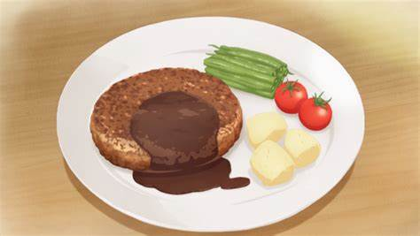

A scrumptious steak dinner, best served with sauce and veggies!
The preferred meal of any Japanese child.
I use ground chicken breast. Though ground pork or beef will work as well.
Ingredients
- 400 grams/0.5 pounds Ground Chicken/Turkey Breast
- 1x Onion
- 1x tablespoon Breadcrumbs/Panko
- 1x Egg
- 1 tablespoon Nutmeg Powder
- Salt
- 1 tablespoon Pepper
Recipe instructions
- Cut 1/2 onion and mince. Add salt to minced onions. Fry over low heat until caramelized.
Mince leftover 1/2 onion and set aside.
- Mash ground meat, uncooked and cooked minced onion, egg, breadcrumbs, nutmeg powder and pepper.
- Shape to desired patty size.
If time, let patties sit in fridge for 30 minutes. This is so the meat sticks together.
- Pan fry 3-minutes each side over medium heat.
- Then one side 4-minutes over low flame.
- Then other side 1-minute over high flame.
- Done.
Return to top
Return to main page